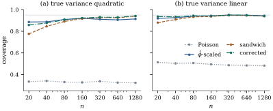

38.3 Sandwich covariance estimation
Theorem 38.2.2
left an asymmetry: the estimating equations are unbiased
as soon as the mean model is right, while the identity
that turns
38.3.1. The asymptotic distribution
Throughout
- (Q1) the
- (Q2)
- (Q3) on a neighbourhood
- (Q4)
- (Q5) with probability tending to
one Eq. 38.1.1 has a
root
Assume (Q1)–(Q5). Then:
(a)
(38.3.1)so that
(b) If the variance specification Eq. 38.1.2 is correct, then
(c) Let
in which
Proof. Step 1: the quasi-score
is asymptotically normal. By Theorem 38.2.2(a)
and (e),
Step 2: the expansion. By (Q3),
Step 3: the Jacobian. By the proof of Theorem 38.2.2(c),
Step 4: assembling. With probability tending
to one
Step 5: the empirical middle. Write
Remark (What (Q5) hides, and when it is
free). Assuming a consistent root assumes
something real: the equations can have no solution, or
several. Under the canonical link of the variance
function
38.3.2. Model-based or robust
The two covariance estimates answer different
questions. Under the log link with
A quasi-Poisson model
Ignoring the dispersion is fatal in both panels and
does not improve with

import numpy as np
BETA = np.array([1.5, 1.0])
HALF = 2.0 # the regressor runs over [-HALF, HALF]
def quasi_poisson(X, y, steps=25):
"""IRLS for the quasi-score equations with a log link and V(mu) = mu."""
beta = np.zeros(X.shape[1])
beta[0] = np.log(max(y.mean(), 0.5))
for _ in range(steps):
mu = np.exp(X @ beta)
z = X @ beta + (y - mu) / mu
beta = np.linalg.solve((X.T * mu) @ X, (X.T * mu) @ z)
return beta, np.exp(X @ beta)
def slope_variances(X, y):
"""The four estimates of Var(b1): naive, phi-scaled, sandwich, leverage-corrected."""
beta, mu = quasi_poisson(X, y)
n, p = X.shape
bread = np.linalg.inv((X.T * mu) @ X)
root = np.sqrt(mu)[:, None] * X
hat = np.sum(root * (root @ bread), axis=1)
r2 = (y - mu) ** 2
phi = np.sum(r2 / mu) / (n - p)
meat = lambda w: bread @ ((X * w[:, None]).T @ X) @ bread
return beta[1], np.array([bread[1, 1], phi * bread[1, 1],
meat(r2)[1, 1], meat(r2 / (1 - hat) ** 2)[1, 1]])
def coverage(n, quadratic, reps, rng, kappa=0.5, phi=9.0):
"""Coverage of nominal 95% normal intervals for b1 over `reps` simulated data sets."""
x = np.linspace(-HALF, HALF, n)
X = np.column_stack([np.ones(n), x])
mu = np.exp(X @ BETA)
shape = np.full(n, kappa) if quadratic else mu / (phi - 1.0)
hit = np.zeros(4)
for _ in range(reps):
y = rng.negative_binomial(shape, shape / (shape + mu)).astype(float)
b1, var = slope_variances(X, y)
hit += np.abs(b1 - BETA[1]) <= 1.96 * np.sqrt(var)
return hit / reps
rng = np.random.default_rng(3821)
names = ["Poisson", "phi-scaled", "sandwich", "corrected"]
for n in (25, 100, 400):
quad = coverage(n, True, 300, rng)
lin = coverage(n, False, 300, rng)
print(f"n = {n:4d} quadratic variance " + " ".join(
f"{k} {v:.3f}" for k, v in zip(names, quad)))
print(f" linear variance " + " ".join(
f"{k} {v:.3f}" for k, v in zip(names, lin)))38.3.3. The dispersion, the quasi-deviance and tests
The model-based covariance needs
Assume Eq. 38.1.2 with the mean model correct.
(a)
(b) The deviance estimator
(c) For nested mean models
Under the reduced model and (Q1)–(Q5),
(d) No convention makes
Proof.
(a) Under Eq. 38.1.2,
(b) Each term of Eq. 38.2.2 is
(c) By Eq. 38.2.2 the difference is
(d) is a definition and a warning, not a claim.
Continue Example (Strike durations).
The Pearson statistic is
| covariance | standard error | |
|---|---|---|
| Poisson, |
||
| model-based, |
||
| empirical sandwich | ||
| leverage-corrected sandwich |
The Poisson standard error is too small by a factor
of about six. More interesting are the second and third
rows: the sandwich exceeds the model-based value by a
factor of only
import numpy as np
import statsmodels.api as sm
data = sm.datasets.strikes.load_pandas().data
y = data["duration"].to_numpy(float) # length of the strike, in days
x = data["iprod"].to_numpy(float) # unanticipated industrial production
X = np.column_stack([np.ones(len(y)), x])
n, p = X.shape
def quasi_irls(X, y, V, steps=60):
"""Solve the quasi-score equations for a log link and variance function V."""
beta = np.zeros(X.shape[1])
beta[0] = np.log(y.mean())
for _ in range(steps):
eta = X @ beta
mu = np.exp(eta)
W = mu ** 2 / V(mu) # working weight (dmu/deta)^2 / V(mu)
z = eta + (y - mu) / mu # working response
beta = np.linalg.solve((X.T * W) @ X, (X.T * W) @ z)
return beta
beta_lin = quasi_irls(X, y, lambda m: m) # V(mu) = mu
mu = np.exp(X @ beta_lin)
pearson = np.sum((y - mu) ** 2 / mu) # X^2 with V(mu) = mu
phi_pearson = pearson / (n - p)
W = mu # log link with V(mu) = mu: W_ii = mu_i
bread = np.linalg.inv((X.T * W) @ X) # (X' W X)^{-1}
root = np.sqrt(W)[:, None] * X
hat = np.sum(root * (root @ bread), axis=1) # leverages of the weighted hat matrix
resid = y - mu
cov_model = bread # phi = 1: the Poisson standard errors
cov_quasi = phi_pearson * bread # phi estimated from the same fit
cov_sand = bread @ ((X * resid[:, None] ** 2).T @ X) @ bread
cov_corr = bread @ ((X * (resid ** 2 / (1 - hat) ** 2)[:, None]).T @ X) @ bread
for name, C in [("Poisson", cov_model), ("quasi", cov_quasi),
("sandwich", cov_sand), ("corrected", cov_corr)]:
se = np.sqrt(np.diag(C))
print(f"{name:10s} slope {beta_lin[1]:8.3f} se {se[1]:6.3f} t {beta_lin[1] / se[1]:7.2f}")
print(f"largest leverage {hat.max():.4f}, sum {hat.sum():.4f}")38.3.4. Corrections, clusters and resampling
Three qualifications finish the section.
Small samples. The empirical
sandwich is biased downwards, for the reason Proposition 21.4.1(a)
identified in the linear model, and the remedy is the
same: divide the
Clusters. If the observations come
in
Resampling. The bootstrap of Chapter
23 applies unchanged: whole observations (Proposition 23.1.5),
the wild bootstrap (Definition 23.2.1),
or whole clusters (Exercise (C1))
for small
38.3.5. Exercises
A. Check your understanding
Under a log link and
Verify from Eq. 38.3.2 that
the empirical sandwich does not change if
B. Practice
Take an intercept-only quasi-Poisson model,
Let
Solution. Repeat the proof of Proposition 38.2.3
with
C. Going deeper
A large discrepancy between